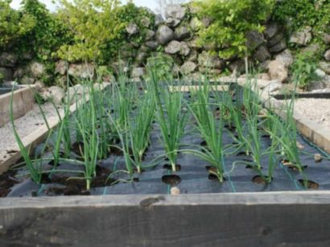
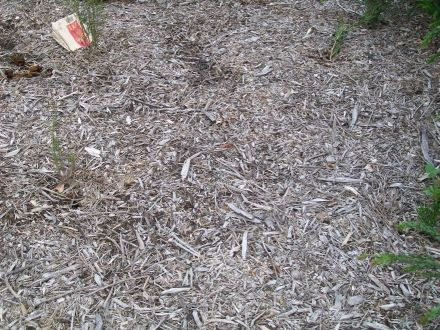

We are all well aware of plastic pollution after Craig Reucassel's 'War on Waste:
And plastic weed mat is a significant source of microplastic pollution in our environment. The weed mat tears apart and shreds into small pieces over the years, which then wash into the gutters, down the drains, into the local creeks and rivers and then out into the ocean.
The thing is that plastic weed mat is not particularly effective at suppressing weeds from the start. To begin
with you have to cut big holes in it in order to plant your shrubs and roses etc.
And that is where the weeds start growing - right at the base of your new plants where they are almost
impossible to deal with.

And many perennial weed species simply push through the weed mat as if it was not there.
Anual weeds grow in the shallow soil that accumulates on top of the weed mat.
And when you have to resort to hand weeding you tear more large holes in the weed mat. The roots and shoots
of trees and shrubs shred the weed mat. Your garden beds end up looking like an illegal dump site full of plastic litter.

They are not the only issue with plastic weed mat. The impermeable, or almost impermeable, layer over the soil prevents earth worms from doing their thing. It reduces penetration of rainfall into the soil. And it reduces aeration of your soil. The soil under weed mat is often rather 'dead' looking, with little obvious organic matter and often quite dry.
The problem is that people buy expensive hardwood mulches, costing $60 per cubic meter and more, and then skimp on them to
save money. The mulch is spread to thinly to be of any use with weed suppression. And it contributes little or no
nitrogen or phosphorous to the soil. In fact nitrogen is lost from the soil as microorganisms break the woody material
down - so called nitogen draw down. But the solution is simple - purchase tree mulch from the tree loppers. It always
contains a good mix of woody and leafy matter, and the latter adds nitrogen and phosphorous to the soil as it is broken down.
It also costs around $30 per cubic meter and there is no delivery fee.

You can afford to lay this thickly over the bare ground to a depth of around 8cm. Over a few months, as the green leafy matter breaks down, the mulch layer will compact down to around 2cm depth. The fungal hyphae cause the mulch to mat together and this largey prevents the wind from blowing the mulch around. The earth worms LOVE IT and you garden beds will be teaming with them in a month or so. They incoorporate the nutrient rich humous through your soil as they burrow, greatly improving your soil over time and increasing rainfall penetration deep into the soil.
Within a couple of months the mulch fades to a uniform brownish colour as the green leafy matter is borken down.
By 12 months the mulch will have faded to a uniform grey colour.

Now I would recommend you just leave it at tree mulch, because this is what ends up happening with decorative mulches:
Twig and leaf debris from trees and shrubs is very noticeable and very quickly turns you decorative mulch into bush mulch.
However with tree lopper mulch the debis blends in and you don't really notice it. However if you insist on the decorative mulch
look then all that needs to be done is to give the tree lopper mulch a light rake to remove surface twigs, and then cover it all
with a thin layer of your chosen decorative mulch. Yes there is a thick layer of tree lopper mulch under all this but you would
never guess it.


{kind=link}
{kind=link}
{kind=link}
{kind=link}
{kind=link}
{kind=link}
{kind=link}
{kind=link}